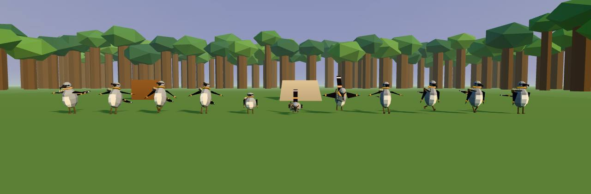
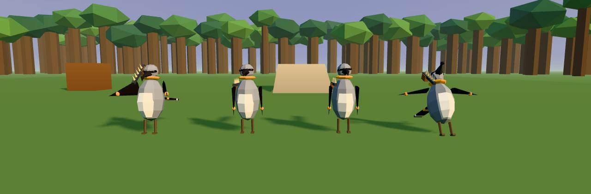
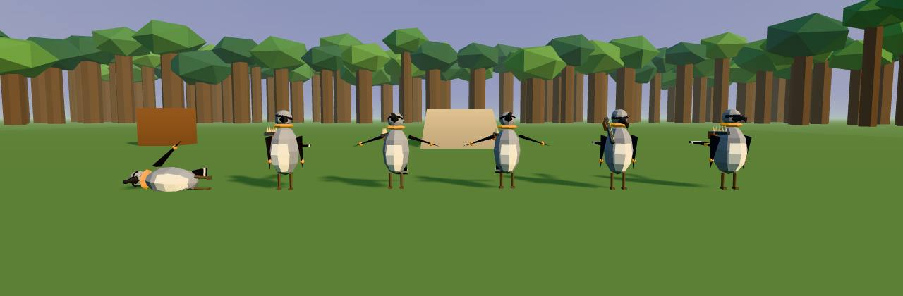

Mechanics
How PERCH works, one system at a time. Every table is generated from the game's data files, so the numbers are always the live ones.
- Movement: run, sprint, jump, dash, slide, mantle, Updrafts, Chimneys and Vines.
- Camera and aim: the shoulder camera, the crosshair and pings.
- Combat: Talon and Song damage, resists, beak shots, falloff, melee and parry.
- Statuses: every status effect in a table.
- Economy: Seeds, seed pods, levels, Ability Points, Molts, bounties and respawn.
- Vision: what you can see and who sees you.


